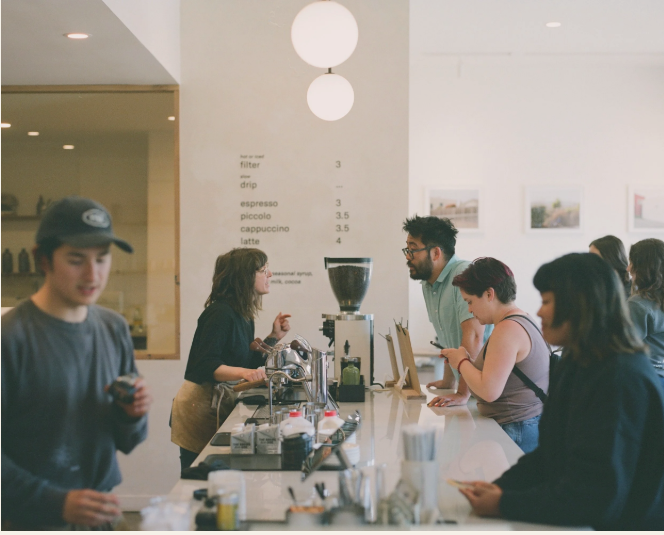

The Coffee Movement is more than just a cafe; it's a community hub and a coffee laboratory all rolled into one. Founded in 2016 by Bryan Overstreet and Reef Bessette, the journey began in the back of a 1969 VW bus, bringing a unique coffee experience to wherever their wheels took them. After a couple of years as a mobile cafe, they found a quaint space in an unassuming street in Chinatown, with a view of the cable cars passing by. This small cafe has now become a beloved gathering spot for the community and a hidden gem for coffee aficionados seeking some of the finest coffee from roasters around the globe..Since then, The Coffee Movement has expanded, opening a second shop and assembling a team dedicated to mastering the art of coffee and advocating for a culture of caring. We invite you to drop by and explore our ever-changing selection of coffee roasters. Until then, take care of yourself and support your local cafe.
